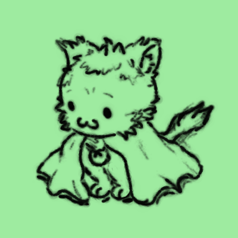

Hey!
I'm Allen, I create video games and other tidbits. Welcome to my site!
About
I'm Allen!
There isn't much to say except my main focus is indie game development. I love to create interactive experiences whether through games, livestreams, websites,
real life, or through anything at all :D
I'm probably working on my main project or if not, probably one of the many other projects I have.
What I'm currently working on
Hunting for rats
A point and click adventure game set in a dreamy universe where you control a pair of investigators in their cases to uncover the dark reality that awaits them.
Read more->